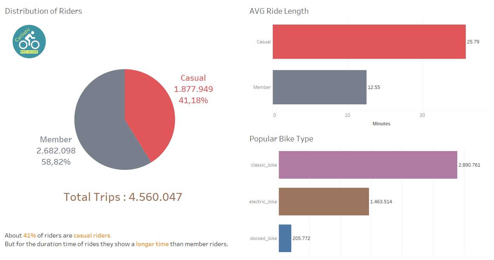
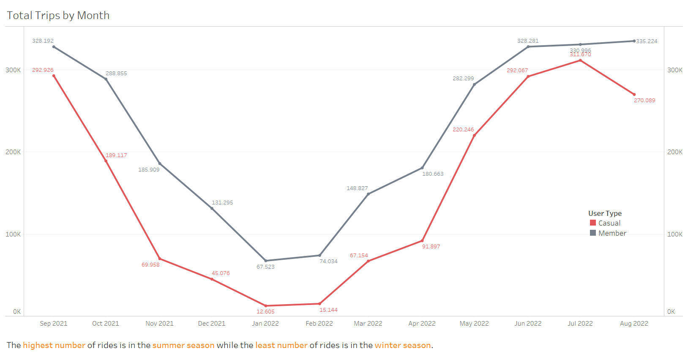
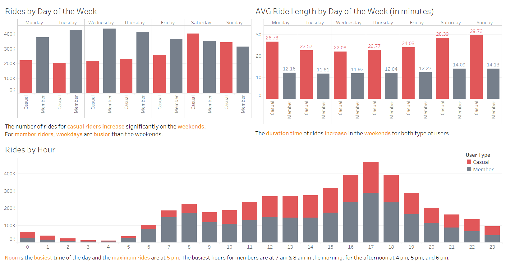
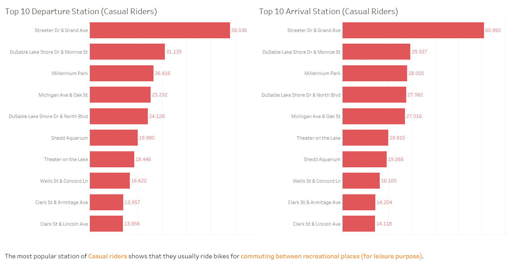

Date : 2022-10-20
1. Introduction
Established in 2016, Cyclistic is a bike-share offering service located in Chicago, USA. Cyclistic currently offers more than 5,800 bicycles that are geo-tracked and locked into a network of over 692 stations across Chicago. The bikes can be unlocked from one station and returned to another station in the system anytime.
Until now, Cyclistic’s marketing strategy relied on building general awareness and appealing to broad consumer segments. One approach that helped make these things possible was the flexibility of its pricing plans:
Cyclistic’s finance analysts have concluded that annual members are much more profitable than casual riders. Although the pricing flexibility helps Cyclistic attract more customers, Moreno believes that maximizing the number of annual members will be key to future growth. Rather than creating a marketing campaign that targets all-new customers, Moreno believes there is a very good chance to convert casual riders into members. She notes that casual riders are already aware of the Cyclistic program and have chosen Cyclistic for their mobility needs.
2. Summary
2.1 Business Task :
Analyze Cyclistic historical bike trip data to identify trends in order to design a new marketing strategy to convert casual riders into annual members.
2.2 Stakeholders :
3. Prepare
Cyclistic have provided historical trip data to be analysed. For the purpose of this analysis, only data between September 2021 and August 2022 will be assessed. The license to use this dataset can be located here.
4. Process
4.1 Data Tools Used
In this analysis, I will be using Microsoft Excel XLS for data sets fomat, MySQL for the data cleaning, analysis and manipulation of data, Navicat Premium for the Database Graphical UI, and Tableau for the creation of visuals.
4.2 Cleaning and Manipulation of Data
There are around 100,000 - 700,000 entries for each month saved under their own MS Excel CSV. Due to the large file sizes, SQL has been used to clean and process the large datasets. There is minimal human error and data bias since the primary, structured, historical data is taken from the bikes themselves.
Import 12 CSV datasets into one table in MySQL. The data has been cleaned by way of merging all 12 datasets into one table, deleting incomplete data elements, removing test station results, and removing negative ride lengths. The full data cleaning process has been documented in “Data Cleaning Process”.
The data cleaning process highlighted that there are a few stations which have been added and/or removed from Cyclistic’s portfolio during the analysis time frame.
The cleaned dataset has been saved under the table name “divvy_tripdata”.
5. Analysis
5.1 Overview of Cyclistic Bike-Share

The pie chart shows the distribution of riders, there are about 41% of riders are casual riders of the total trips : 4,560,047.
The average ride length for casual riders is 25.79 minutes, while member riders for an average of 12.55 minutes. The duration time of casual riders show a longer time than member riders.
The bar graph shows that the most popular bike type is classic bike, that is as much as 2.890.761 rides.
5.2 Monthly Ride Trends

The above line chart shows that the summer months are the busiest season of year for Cyclistic with the highest number of rides. While the least number of rides is in the winter season. This pattern is the same for both user types.
5.3 Daily and Hourly Trends

Broadly speaking, the number of rides for casual riders increase significantly on the weekends. For member riders, weekdays are busier than the weekends. The most common weekday for members is Wednesday while the most common day for casual riders is Saturday. This indicate that members are using the Cyclistic service for their work commute and other daily activities unlike casual riders whom are using the Cyclistic service for predominately leisure purposes.
The duration time of rides increase in the weekends for both type of users.
The busiest time of day is noon and the maximum rides are at 5pm.
The busiest hours for members are at 7am & 8am in the morning, for the afternoon at 4pm, 5pm, and 6pm. The significant increase of member riders using the bikes are at 7am & 8am and later on around 5pm indicates that member riders are using the Cyclistic bikes for their work commutes.
5.4 Most Popular Stations
Casual Most Visited Stations

The horizontal bar demonstrates the top 10 departure and arrival station for casual riders. From this, it can be seen that the most popular station of casual riders shows that they usually ride bikes for commuting between recreational places (for leisure purpose).
Member Most Visited Stations

The horizontal bar demonstrates the top 10 departure and arrival station for member riders. From this, it can be seen that the most popular station of member riders shows that they use bikes for commuting between work.
In summary, we have identified :
1. This indicates a different purpose in using Cyclistic services, where casual riders use bikes for leisure purposes while member riders use bikes for their work commutes.
The results of the analysis are shown in the graph as follows :
1) Most popular station
2) Most common day
3) Most popular time of day
The significant increase of member riders using the bikes are at 7am & 8am and later on around 5pm indicates that member riders are using the Cyclistic bikes for their work commutes.
4) Average ride length
The duration time of casual riders show a longer time than member riders. Again this further strengthens the argument that casual riders use Cyclistic bikes for leisure purposes.
2. Around 41% of riders are casual riders (not member). And the popular bike type is classic bike.
3. The busiest season is Summer and afternoon being the busiest time of the day.
6. Recommendations
As identified in the client brief, the marketing recommendations concluded from the insights of this case study should not be focused on encouraging new customers to use the Cyclistic bike service but instead focus on encouraging casual riders to convert to annual memberships.
The three possible marketing recommendations for Cyclistic are as follows :
1. Email reminders/notifications for casual riders to observe the price benefits and advantages of annual memberships
Offer the benefits and advantages that will be get if joining as an annual membership rather than regularly purchasing casual trips with Cyclistic. Email reminders and phone notifications should be used to remind regular casual riders of the long term pricing benefits from investing in an annual membership rather than purchasing regular casual trips.
2. Digital campaign which shows Cyclistic bike’s being used in a Chicago local’s everyday life
To encourage casual riders to become members, a digital campaign which encourages Chicago locals to observe how Cyclistic fits into their every day life would be beneficial. Also highlighting the benefits of riding bikes outdoors for health with good airflow. So that casual riders are interested in using bikes not only for leisure purposes.
3. Offer discounts for new membership and promos for the first 2 years membership
1) Offer annual membership price discounts (% off) for joining a new member.
New members will get a percentage discount (% off) from the regular annual membership price.
2) Offer attractive promos of special prices for the first 2 years of membership.
This will further grow loyalty in using the annual membership, because riders have been bound for the first 2 years using the annual membership. With this, the opportunity for riders to maintain their membership for the following years will be greater because they can feel the benefits after they join membership for a longer time.
Email reminders should be used to offer non-members of this new membership discounts and promos.